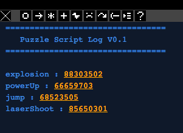

- Documentation
- Bird's-eye View
- Sounds
Bird's-eye view of a PuzzleScript file
A puzzlescript file is divided into 8 sections:
Sounds
Here's where you hook up sounds to in-game actions.
There are sound buttons above the console, that produce sound seeds that you can use in this section.

These numbers are saved representations of the sounds, and you use them in the sound sections.
A sound section could look like the following:
player move up 142315
Player Move down 142313
Player Move right 142311
Crate Move 412312
Player CantMove up 41234
Crate CantMove 41234
Crate Create 41234123
CloseMessage 1241234
Sfx0 213424
Sfx3 213424
here are the possible sound events declarations
- Cancel 123413
- Played when the a rule triggers the CANCEL command.
- Crate Action 123414
- Triggers when a crate is subject to the 'action' during a movement phase.
- Crate Create 123414
- Triggers when a crate is created.
- EndGame 123413
- When you finish the game, and end up back at the title screen.
- EndLevel 123413
- When you finish a level.
- Player CantMove 4123412
- Triggers when that object unsuccessfully moves, in any direction.
- Player CantMove Down Left 4123412
- Triggers when that object unsuccessfully moves, either down or left.
- CloseMessage 123434
- makes a sound when the player closes a message window
- Crate Destroy 123414
- Triggers when a crate is destroyed.
- Player Move 4123412
- Triggers when that object successfully moves, in any direction.
- Player Move Down Left 4123412
- Triggers when that object successfully moves either down or left.
- Player Move Horizontal 4123412
- Triggers when that object successfully moves horizontally. Vertical is also valid here.
- Restart 123413
- Played when the player presses the restart button (R).
- SFX0 123434
- Can be anything form SFX0 to SFX10. These are custom sound events that can be triggered from rules.
- ShowMessage 123434
- makes a sound when a message appears
- StartGame 123413
- When you start a new game from the title screen.
- Startlevel 123413
- Played at the start of each level.
- TitleScreen 123414
- Triggers when the title-screen is loaded.
- Undo 123413
- Played when the player presses the undo button (Z).
move and
cantmove can be supplied with directions, so that certain sounds play if you move in particular directions.
 PuzzleScript
PuzzleScript